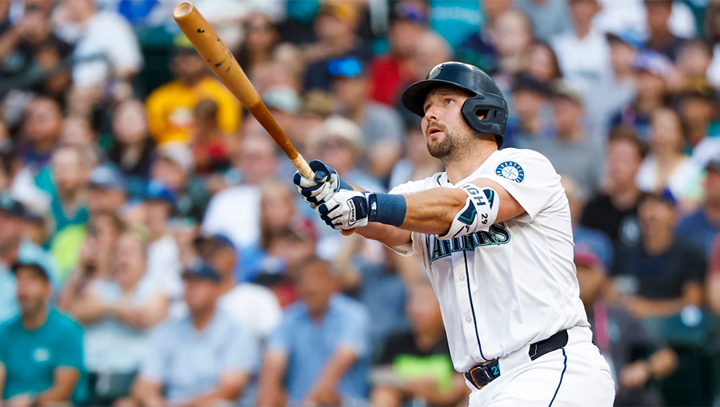
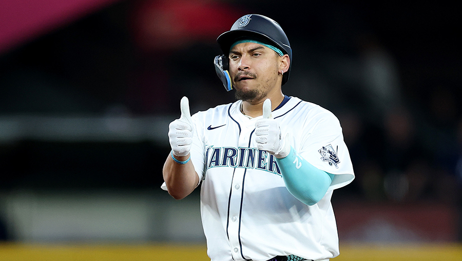

Julio Rodriguez signed with the Mariners as an international free agent in 2017 from the Dominican Republic at the young age of 16! He spent about 5 years in the minor leagues until he debuted on the Major League roster for the Seattle Mariners when he was 21 years old on April 8, 2022.
2022 AL Rookie of the Year: Won the award unanimously after a historic debut season where he reached 25 home runs and 25 stolen bases faster than any player in MLB history. he is best known for his explosive power and speed, becoming the only player in MLB history to record 110+ home runs and 110+ stolen bases in their first four major league seasons.
Julio is a multi-time MLB All-Star and Silver Slugger award recipient. He signed a massive, long-term contract extension with the Mariners that secures him in Seattle well through the end of the decade, featuring player options that could stretch deep into his 30s
Nicknamed "J-Rod", Julio patrols center field for the Mariners or as he calls it "The No Fly Zone" due to his amazing ability to cover so much ground and his stellar Gold Glove defense
Cal Raleigh

Key Contract Detail
Total Value: $105 million guaranteed, 10 million signing bonus
Average Annual Value (AAV): $17.5 million
Duration: 6 years, covering his remaining arbitration years and three years of free agency
Team Option: Vesting player option for 2031
Cal Raleigh joined the Seattle Mariners in the third round (90th overall pick) of the 2018 MLB Draft. He officially signed with the organization shortly after on May 24, 2018, and made his Major League debut with the team on July 11, 2021
2025 AL Home Run King: Cal hit an MLB-leading 60 home runs in '25. In doing so, he set single-season records for a catcher and a switch-hitter, and became only the seventh player in MLB history to hit at least 60 home runs in a single season.
Cal is an Award-Winning Catcher: Has earned prestigious defensive and offensive honors including Gold Glove, Platinum Glove, and Silver Slugger, he is one of the top catchers in the entire MLB!
Josh Naylor

Naylz
1st Baseman/DH
Signed a five-year, $92.5 million contract with the Seattle Mariners. The deal, which includes a full no-trade clause and no deferred payments, keeps him in Seattle through the 2030 season
Average Annual Value (AAV): $18.5 million with a $6.5 million signing bonus
Known for his power, clutch hitting, and intense playing style, he is a former All-Star and a cornerstone of the Canadian National Team
Despite consistently ranking among the slowest sprinters in the majors, he pulled off a jaw-dropping base-running feat by stealing 30 bases on 32 attempts
His brother, Bo Naylor, is a catcher for the Cleveland Guardians and they got to play in Cleveland together for 2 seasons
Became an instant fan favorite in Seattle after he was aquired at the trade deadline last season
Legendary Players
The Seattle Mariners in their short history have had a number of legendary players throughout the years! Ken Griffey Jr, Alex Rodriguez, Ichiro Suzuki, Randy Johnson, Jay Buhner, Edgar Martínez, Edwin Diaz, and who could forget manager "Sweet" Lou Piniella; who transformed the franchise into a perennial powerhouse during his 10-year tenure (1993–2002).